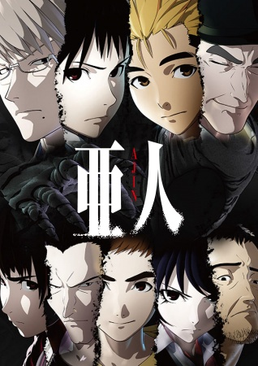
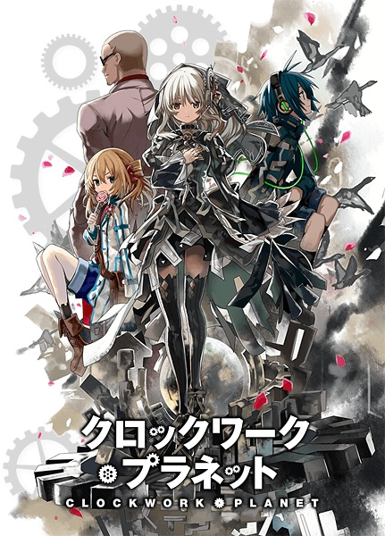

Animes Legendados
Ajin

Ajin são seres imortais. Há 17 anos atrás, sua primeira aparição se deu em um campo de batalha na África. Dali em diante, mais de sua espécie são descobertos
dentro da sociedade. Sua raridade se dá pelo fato de que, para fins experimentais, o governo generosamente recompensa qualquer um que
os capturar. Atualmente, para um certo estudante que espera que suas férias de verão seja
INFORMAÇÕES:
Nome: Ajin
Autor: Gamon Sakurai
Direção: Hiroyuki Seshita
Estudio: Polygon Pictures
Ano: 2016
Gênero: Aventura, Drama, Mistério, Sobrenatural, Terror
Episódios: 13 + 2 OVA
Status: Completo
Classificação etária: 18 anos
Clockwork Planet

Um dia, uma caixa preta subitamente caiu na casa do aluno de ensino médio Naoto Miura,
dentro dela estava um autômato feminino,
o ciclo de falha e sucesso.
O mundo imutável e os humanos que não mudam em um tempo onde a realidade e a fantasia gritam,
o encontro desses dois fazem as engrenagens do destino de moverem!